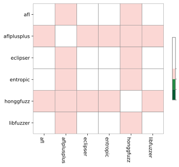
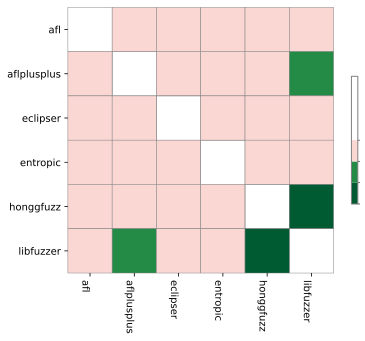
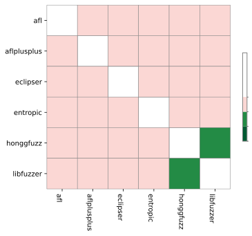
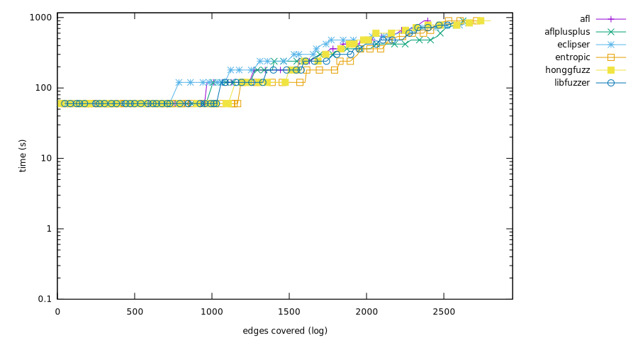

Experiment result
Critical difference
Micro-benchmark Critical difference
| Fuzzer | Rank |
|---|
| aflplusplus | 2.85 |
| honggfuzz | 3.33 |
| afl | 3.42 |
| entropic | 3.44 |
| eclipser | 3.73 |
| libfuzzer | 4.02 |
Overall (ranking by edges covered)
- aflplusplus (835,453 edges covered), success rate: 18.55%(371/2000 pairs)
- honggfuzz (822,878 edges covered), success rate: 15.55%(311/2000 pairs)
- afl (796,629 edges covered), success rate: 16.75%(335/2000 pairs)
- eclipser (795,394 edges covered), success rate: 15.60%(312/2000 pairs)
- entropic (783,033 edges covered), success rate: 16.35%(327/2000 pairs)
- libfuzzer (743,882 edges covered), success rate: 14.65%(293/2000 pairs)
bloaty_fuzz_target
Ranking
- afl, (31,625 edges covered), success rate: 5.00%(5/100 pairs)
- honggfuzz, (31,357 edges covered), success rate: 6.00%(6/100 pairs)
- eclipser, (31,221 edges covered), success rate: 4.00%(4/100 pairs)
- entropic, (27,766 edges covered), success rate: 2.00%(2/100 pairs)
- libfuzzer, (23,877 edges covered), success rate: 2.00%(2/100 pairs)
- aflplusplus, (21,760 edges covered), success rate: 1.00%(1/100 pairs)
Mann-Whitney U test
curl_curl_fuzzer_http
Ranking
- aflplusplus, (63,555 edges covered), success rate: 0.00%(0/100 pairs)
- afl, (53,438 edges covered), success rate: 0.00%(0/100 pairs)
- honggfuzz, (52,215 edges covered), success rate: 0.00%(0/100 pairs)
- eclipser, (52,121 edges covered), success rate: 0.00%(0/100 pairs)
- entropic, (48,426 edges covered), success rate: 0.00%(0/100 pairs)
- libfuzzer, (46,220 edges covered), success rate: 0.00%(0/100 pairs)
Mann-Whitney U test
freetype2-2017
Ranking
- honggfuzz, (62,931 edges covered), success rate: 1.00%(1/100 pairs)
- aflplusplus, (61,997 edges covered), success rate: 0.00%(0/100 pairs)
- eclipser, (52,624 edges covered), success rate: 0.00%(0/100 pairs)
- libfuzzer, (41,383 edges covered), success rate: 0.00%(0/100 pairs)
- entropic, (41,307 edges covered), success rate: 1.00%(1/100 pairs)
- afl, (40,481 edges covered), success rate: 0.00%(0/100 pairs)
Mann-Whitney U test
harfbuzz-1.3.2
Ranking
- aflplusplus, (61,533 edges covered), success rate: 2.00%(2/100 pairs)
- honggfuzz, (59,315 edges covered), success rate: 1.00%(1/100 pairs)
- afl, (56,061 edges covered), success rate: 2.00%(2/100 pairs)
- eclipser, (56,014 edges covered), success rate: 1.00%(1/100 pairs)
- entropic, (51,364 edges covered), success rate: 0.00%(0/100 pairs)
- libfuzzer, (49,331 edges covered), success rate: 0.00%(0/100 pairs)
Mann-Whitney U test
jsoncpp_jsoncpp_fuzzer
Ranking
- entropic, (9,196 edges covered), success rate: 100.00%(100/100 pairs)
- afl, (9,194 edges covered), success rate: 99.00%(99/100 pairs)
- eclipser, (9,194 edges covered), success rate: 99.00%(99/100 pairs)
- honggfuzz, (9,191 edges covered), success rate: 98.00%(98/100 pairs)
- libfuzzer, (9,190 edges covered), success rate: 97.00%(97/100 pairs)
- aflplusplus, (9,145 edges covered), success rate: 84.00%(84/100 pairs)
Mann-Whitney U test

lcms-2017-03-21
Ranking
- aflplusplus, (20,318 edges covered), success rate: 1.00%(1/100 pairs)
- honggfuzz, (19,075 edges covered), success rate: 1.00%(1/100 pairs)
- afl, (18,451 edges covered), success rate: 3.00%(3/100 pairs)
- entropic, (16,550 edges covered), success rate: 0.00%(0/100 pairs)
- eclipser, (16,350 edges covered), success rate: 0.00%(0/100 pairs)
- libfuzzer, (13,533 edges covered), success rate: 0.00%(0/100 pairs)
Mann-Whitney U test

libjpeg-turbo-07-2017
Ranking
- aflplusplus, (24,479 edges covered), success rate: 22.00%(22/100 pairs)
- afl, (20,227 edges covered), success rate: 13.00%(13/100 pairs)
- eclipser, (19,860 edges covered), success rate: 11.00%(11/100 pairs)
- entropic, (18,867 edges covered), success rate: 8.00%(8/100 pairs)
- honggfuzz, (16,910 edges covered), success rate: 5.00%(5/100 pairs)
- libfuzzer, (13,222 edges covered), success rate: 5.00%(5/100 pairs)


Mann-Whitney U test
libpcap_fuzz_both
Ranking
- aflplusplus, (40,182 edges covered), success rate: 14.00%(14/100 pairs)
- honggfuzz, (37,033 edges covered), success rate: 8.00%(8/100 pairs)
- entropic, (36,527 edges covered), success rate: 5.00%(5/100 pairs)
- libfuzzer, (34,592 edges covered), success rate: 8.00%(8/100 pairs)
- eclipser, (34,344 edges covered), success rate: 11.00%(11/100 pairs)
- afl, (34,317 edges covered), success rate: 10.00%(10/100 pairs)

Mann-Whitney U test
libpng-1.2.56
Ranking
- aflplusplus, (13,111 edges covered), success rate: 53.00%(53/100 pairs)
- entropic, (11,122 edges covered), success rate: 36.00%(36/100 pairs)
- honggfuzz, (11,019 edges covered), success rate: 44.00%(44/100 pairs)
- libfuzzer, (10,433 edges covered), success rate: 16.00%(16/100 pairs)
- eclipser, (10,115 edges covered), success rate: 37.00%(37/100 pairs)
- afl, (9,953 edges covered), success rate: 38.00%(38/100 pairs)
Mann-Whitney U test
libxml2-v2.9.2
Ranking
- honggfuzz, (79,177 edges covered), success rate: 28.00%(28/100 pairs)
- afl, (78,683 edges covered), success rate: 24.00%(24/100 pairs)
- eclipser, (77,079 edges covered), success rate: 19.00%(19/100 pairs)
- aflplusplus, (76,738 edges covered), success rate: 16.00%(16/100 pairs)
- entropic, (72,947 edges covered), success rate: 10.00%(10/100 pairs)
- libfuzzer, (69,713 edges covered), success rate: 8.00%(8/100 pairs)
Mann-Whitney U test

libxslt_xpath
Ranking
- aflplusplus, (51,068 edges covered), success rate: 3.00%(3/100 pairs)
- afl, (48,822 edges covered), success rate: 2.00%(2/100 pairs)
- eclipser, (48,540 edges covered), success rate: 3.00%(3/100 pairs)
- libfuzzer, (48,163 edges covered), success rate: 2.00%(2/100 pairs)
- honggfuzz, (48,158 edges covered), success rate: 2.00%(2/100 pairs)
- entropic, (48,037 edges covered), success rate: 2.00%(2/100 pairs)
Mann-Whitney U test
mbedtls_fuzz_dtlsclient
Ranking
- aflplusplus, (9,249 edges covered), success rate: 16.00%(16/100 pairs)
- honggfuzz, (8,761 edges covered), success rate: 8.00%(8/100 pairs)
- entropic, (7,783 edges covered), success rate: 11.00%(11/100 pairs)
- eclipser, (7,005 edges covered), success rate: 8.00%(8/100 pairs)
- afl, (6,914 edges covered), success rate: 10.00%(10/100 pairs)
- libfuzzer, (5,742 edges covered), success rate: 8.00%(8/100 pairs)
Mann-Whitney U test
openssl_x509
Ranking
- entropic, (23,465 edges covered), success rate: 0.00%(0/100 pairs)
- aflplusplus, (23,274 edges covered), success rate: 0.00%(0/100 pairs)
- libfuzzer, (22,369 edges covered), success rate: 0.00%(0/100 pairs)
- afl, (22,169 edges covered), success rate: 0.00%(0/100 pairs)
- eclipser, (19,649 edges covered), success rate: 0.00%(0/100 pairs)
- honggfuzz, (18,401 edges covered), success rate: 0.00%(0/100 pairs)
Mann-Whitney U test
openthread-2019-12-23
Ranking
- entropic, (17,136 edges covered), success rate: 22.00%(22/100 pairs)
- libfuzzer, (17,071 edges covered), success rate: 23.00%(23/100 pairs)
- aflplusplus, (16,927 edges covered), success rate: 21.00%(21/100 pairs)
- afl, (15,868 edges covered), success rate: 15.00%(15/100 pairs)
- eclipser, (15,666 edges covered), success rate: 9.00%(9/100 pairs)
- honggfuzz, (15,085 edges covered), success rate: 5.00%(5/100 pairs)

Mann-Whitney U test
php_php-fuzz-parser
Ranking
- entropic, (108,014 edges covered), success rate: 0.00%(0/100 pairs)
- honggfuzz, (107,590 edges covered), success rate: 0.00%(0/100 pairs)
- afl, (104,948 edges covered), success rate: 0.00%(0/100 pairs)
- aflplusplus, (103,965 edges covered), success rate: 1.00%(1/100 pairs)
- eclipser, (102,298 edges covered), success rate: 0.00%(0/100 pairs)
- libfuzzer, (101,312 edges covered), success rate: 0.00%(0/100 pairs)

Mann-Whitney U test
proj4-2017-08-14
Ranking
- entropic, (17,492 edges covered), success rate: 23.00%(23/100 pairs)
- libfuzzer, (17,218 edges covered), success rate: 20.00%(20/100 pairs)
- honggfuzz, (17,129 edges covered), success rate: 14.00%(14/100 pairs)
- aflplusplus, (16,285 edges covered), success rate: 10.00%(10/100 pairs)
- afl, (15,725 edges covered), success rate: 4.00%(4/100 pairs)
- eclipser, (15,533 edges covered), success rate: 4.00%(4/100 pairs)
Mann-Whitney U test
re2-2014-12-09
Ranking
- aflplusplus, (52,063 edges covered), success rate: 86.00%(86/100 pairs)
- libfuzzer, (52,051 edges covered), success rate: 85.00%(85/100 pairs)
- afl, (52,050 edges covered), success rate: 82.00%(82/100 pairs)
- eclipser, (52,035 edges covered), success rate: 76.00%(76/100 pairs)
- honggfuzz, (52,006 edges covered), success rate: 63.00%(63/100 pairs)
- entropic, (51,508 edges covered), success rate: 70.00%(70/100 pairs)
Mann-Whitney U test
sqlite3_ossfuzz
Ranking
- afl, (167,556 edges covered), success rate: 3.00%(3/100 pairs)
- eclipser, (165,939 edges covered), success rate: 3.00%(3/100 pairs)
- honggfuzz, (165,865 edges covered), success rate: 1.00%(1/100 pairs)
- entropic, (164,124 edges covered), success rate: 6.00%(6/100 pairs)
- libfuzzer, (160,151 edges covered), success rate: 2.00%(2/100 pairs)
- aflplusplus, (156,835 edges covered), success rate: 4.00%(4/100 pairs)
Mann-Whitney U test
systemd_fuzz-link-parser
Ranking
- honggfuzz, (2,805 edges covered), success rate: 10.00%(10/100 pairs)
- entropic, (2,751 edges covered), success rate: 13.00%(13/100 pairs)
- eclipser, (2,683 edges covered), success rate: 13.00%(13/100 pairs)
- aflplusplus, (2,625 edges covered), success rate: 8.00%(8/100 pairs)
- libfuzzer, (2,562 edges covered), success rate: 9.00%(9/100 pairs)
- afl, (2,396 edges covered), success rate: 10.00%(10/100 pairs)

Mann-Whitney U test
vorbis-2017-12-11
Ranking
- aflplusplus, (10,344 edges covered), success rate: 29.00%(29/100 pairs)
- honggfuzz, (8,855 edges covered), success rate: 16.00%(16/100 pairs)
- entropic, (8,651 edges covered), success rate: 18.00%(18/100 pairs)
- afl, (7,751 edges covered), success rate: 15.00%(15/100 pairs)
- eclipser, (7,124 edges covered), success rate: 14.00%(14/100 pairs)
- libfuzzer, (5,749 edges covered), success rate: 8.00%(8/100 pairs)
Mann-Whitney U test